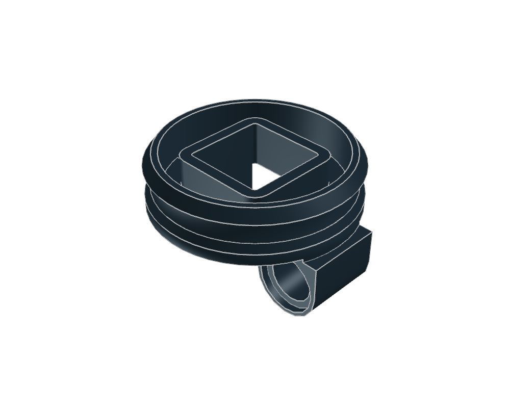
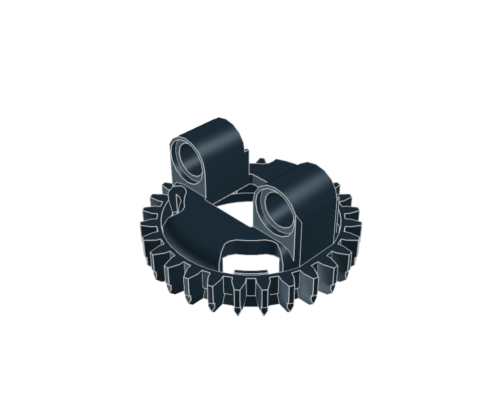
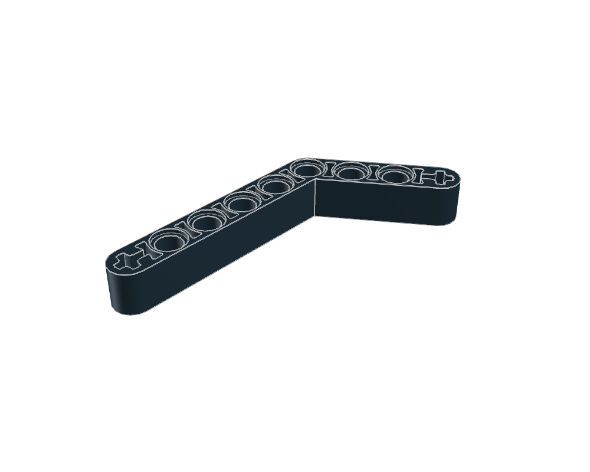
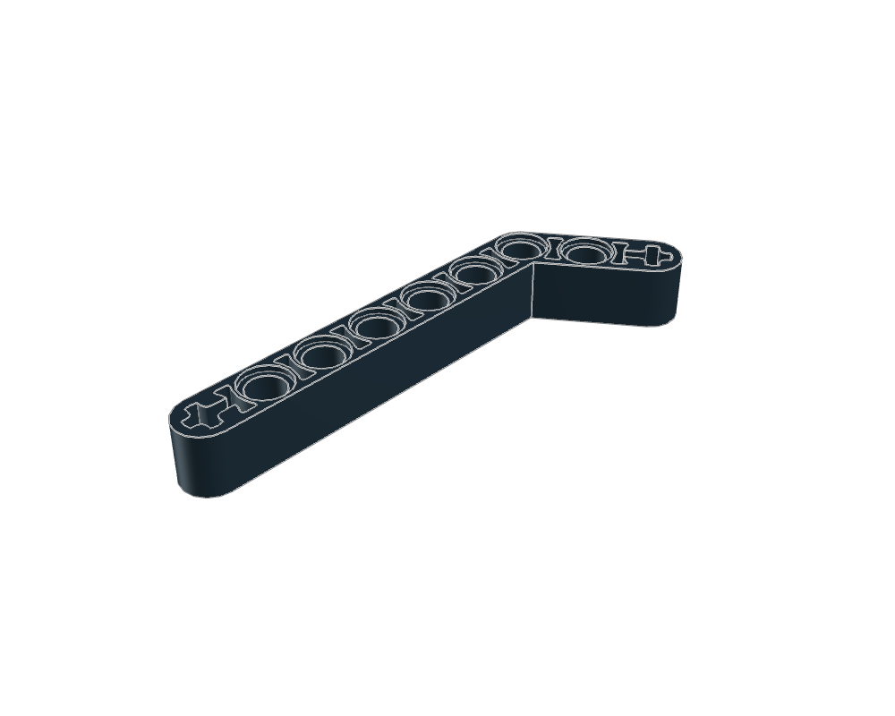
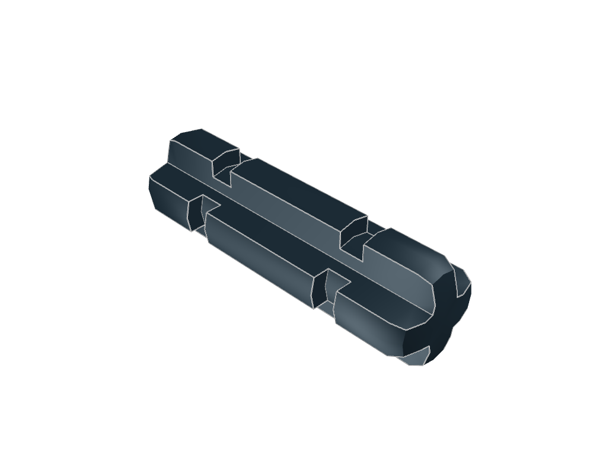

Technic Turntable 28 Tooth Bottom
9900999009.dat · 58 × 33 × 54.0013 LDU
Inspect sourceActual library geometry. Each view is fitted independently: compare the listed dimensions, not image size. Bounds include studs and decoration; they are not stacking heights.

9900999009.dat · 58 × 33 × 54.0013 LDU
Inspect source
9901099010.dat · 73.604 × 39.0002 × 73.604 LDU
Inspect source
66296629.dat · 65.9099 × 20 × 153.909 LDU
Inspect source
3227132271.dat · 49.9099 × 20 × 161.909 LDU
Inspect source
3206232062.dat · 39 × 12 × 12 LDU
Inspect source